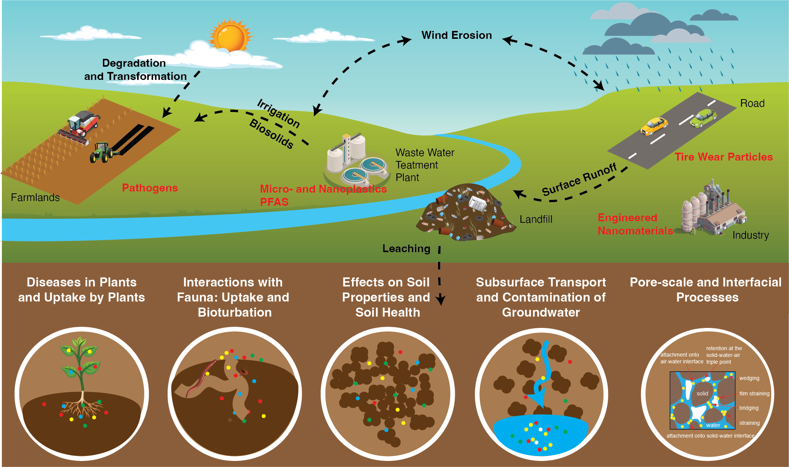

PhD Assistantship in Environmental Soil Physics
The Environmental Soil Physics Lab, led by Dr. Yingxue Yu, Assistant Professor in the Department of Ecosystem Science and Management at The Pennsylvania State University, is recruiting a PhD student to begin in Spring, Summer, or Fall 2027. The successful candidate will be admitted through either the Soil Science Graduate Program or the Intercollege Graduate Degree Program in Ecology and will have the opportunity to pursue a dual-title PhD in Biogeochemistry. The lab focuses on understanding how physicochemical interactions and environmental factors shape contaminant behavior across terrestrial and aquatic environments.
Overview of Research Areas

Conceptual illustration of contaminant pathways, transformations, and interactions in terrestrial and aquatic systems.
Specific Research Areas
- Transport of emerging contaminants (e.g., micro- and nanoplastics, PFAS, engineered nanomaterials, and pathogens) in saturated and unsaturated porous media;
- Aggregation, stability, and transformation of contaminants in soil and water systems;
- Quantification of adsorption and interfacial interactions using QCM-D and related surface techniques;
- Characterization of soil hydraulic properties, water flow processes, and indicators of soil health;
- Uptake and interactions of contaminants with plants;
- Evaluation of the environmental sustainability and degradation behavior of biodegradable plastics.
The student will study research topics within these areas through laboratory, field, and modeling approaches using computational tools such as C++, R, and Python. The lab fosters a collaborative and supportive environment that encourages creative, rigorous, and independent inquiry into the environmental behavior of contaminants. Motivated students who are passionate about learning, scientific research, and continued professional growth are welcome to join our growing team at Penn State.
Eligibility & Priority
- Master’s degree in Hydrology, Soil Science, Water Resources, Environmental Science, Environmental Engineering, or a closely related field, with relevant training or research experience in soil physics, hydrology, contaminant transport.
-
Priority will be given to applicants who have:
- Strong commitment to research integrity and responsible research practices;
- Genuine interest in scientific research and learning;
- Effective communication and collaboration skills;
- Training in mathematics and physics, with an interest in applying and further developing these skills in research;
- Experience and/or interest in programming and computational modeling (e.g., C++, R, or Python).
- GRE scores are not required; however, high GRE scores are considered a desirable qualification.
- Exceptional applicants holding a bachelor’s degree may be considered and offered a pathway consisting of a 2-year master’s program followed by a 3-year PhD program.
- For details on English proficiency, minimum GPA, and other requirements, please refer to the Penn State Graduate School.
Application Deadline: The position will remain open until filled, with applications reviewed on a rolling basis beginning immediately.
Request a Meeting Before Applying
Prospective students who are interested in this PhD opportunity may request a meeting with Dr. Yu before applying. The meeting provides an opportunity to learn more about the position, discuss research interests, and ask specific questions about potential research directions and the PhD program.
To request a meeting, please use the button below to complete a brief meeting request form. You will be asked to explain why a meeting would be helpful, provide the specific questions you would like to discuss, and upload your current CV. Meeting requests will be reviewed individually. Following review, selected prospective students will be contacted to arrange an online meeting with Dr. Yu via Zoom.
How to Apply
Interested applicants should use the button below to complete the online application form. Applicants will be asked to provide academic information, answer questions about their research background, interests, career goals, and motivation for pursuing a PhD, and upload a single PDF containing the required application materials.
The application package should include the following materials in one PDF file:
- Cover letter describing qualifications, research interests, research experience, and career goals, including how these align with the above-mentioned research areas (max. 2 pages);
- Curriculum vitae;
- Bachelor’s and Master’s academic transcripts (unofficial transcripts are acceptable for initial review);
- Names and contact information of three references;
- One representative publication, if available;
- GRE, TOEFL, or IELTS test reports, if available.
Application materials should be submitted through the online application form. Materials submitted by email or applications that do not include the requested information and materials may not be reviewed.
Please include any questions about the position in the application form whenever possible. For matters that cannot be addressed through the application form, please contact Dr. Yingxue Yu at yqy5525@psu.edu.
Living at Penn State
Nestled in State College, the University Park campus blends a tight-knit college-town vibe with the resources of a flagship research university ranked 82nd globally in the 2026 QS World University Rankings. Students enjoy a walkable community with cafés, arts venues, and quick access to trails and parks across central Pennsylvania. You will find modern housing options, abundant study spaces, and comprehensive recreation and wellness facilities that support a balanced, healthy lifestyle. With 1,000+ student organizations spanning engineering, the arts, culture, and service, it is easy to find your people and your passion.

About Dr. Yingxue Yu
Dr. Yingxue Yu is an Assistant Professor of Soil-Water Interactions in the Department of Ecosystem Science and Management at The Pennsylvania State University. She earned her Ph.D. in Soil Science from Washington State University in 2022, her M.S. in Hydrogeology from China University of Geosciences–Beijing in 2018, and her B.Eng. in Hydrology and Water Resources Engineering from Shandong University of Science and Technology in 2015.